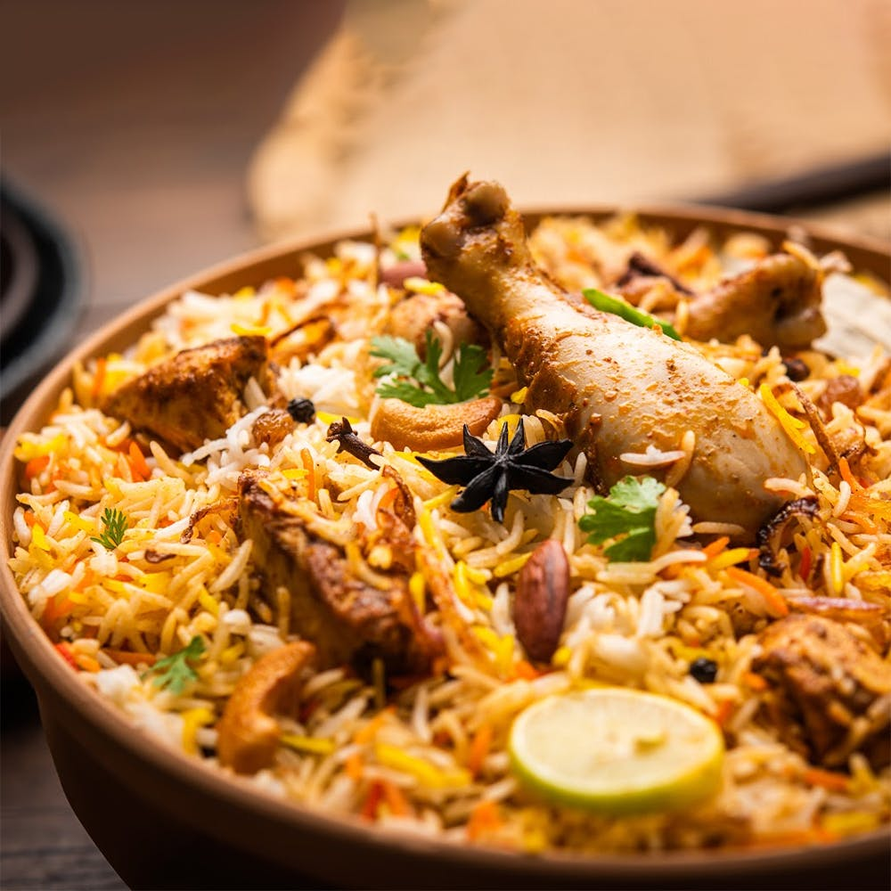

FAVOURITE PLACE
TAJ MAHAL
he Taj Mahal is an Islamic religious building, mosque and tomb in India, built in the 17th century by Emperor Shah Jahan in memory of his wife, Mumtaz Mahal. Its chief architect was Ustad Ahmad Lahauri. The building is in the city of Agra, Uttar Pradesh. Widely thought as one of the most beautiful buildings in the world, it is one of India's biggest tourist attractions. It is listed as a UNESCO World Heritage Site, together with the Agra Fort, 2.5 kilometers away, and was listed as one of the 7 Wonders of the World in 2007. It is located on the south bank of Yamuna river in Agra. It was originally a white monument, but because of pollution, the Taj Mahal is turning yellow - the sulphur dioxide getting in the atmosphere reacts with water molecules and becomes sulphuric acid, which slowly destroys the outer layer of the building.
FAVOURITE FOOD
BIRYANI
“biryani” comes from the Persian word “birian” which means “fried before cooking.” One could conclude that the biryani originated in Iran (previously known as Persia). Another interesting story traces the origins of the dish to Mumtaz Mahal (1593-1631), Shah Jahan's queen who inspired the Taj Mahal class Biryani is a mixed rice dish originating among the Muslims of South Asia. It is made with Indian spices, vegetables, rice, and usually some type of meat, or in some cases without any meat, and sometimes, in addition, eggs and potatoes Mahal
FAVOURITE ACTOR
JR.NTR

Rao established himself as a leading actor in Telugu cinema with works such as Simhadri (2003), Yamadonga (2007), Adhurs (2010), Brindavanam (2010), Baadshah (2013), Temper (2015), Nannaku Prematho (2016), Janatha Garage (2016), Jai Lava Kusa (2017), Aravinda Sametha Veera Raghava (2018), and RRR (2022), the latter being his highest-grossing releaseRao established himself as a leading actor in Telugu cinema with works such as Simhadri (2003), Yamadonga (2007), Adhurs (2010), Brindavanam (2010), Baadshah (2013), Temper (2015), Nannaku Prematho (2016), Janatha Garage (2016), Jai Lava Kusa (2017), Aravinda Sametha Veera Raghava (2018), and RRR (2022), the latter being his highest-grossing release
FAVOURITE ACTRESS
POOJA HEGDE
Pooja Hegde is an Indian actress who predominantly appears in Telugu films in addition to few Hindi and Tamil films. She began her career as a model and was crowned as the second runner-up at the 2010 I Am She–Miss Universe India pageant.